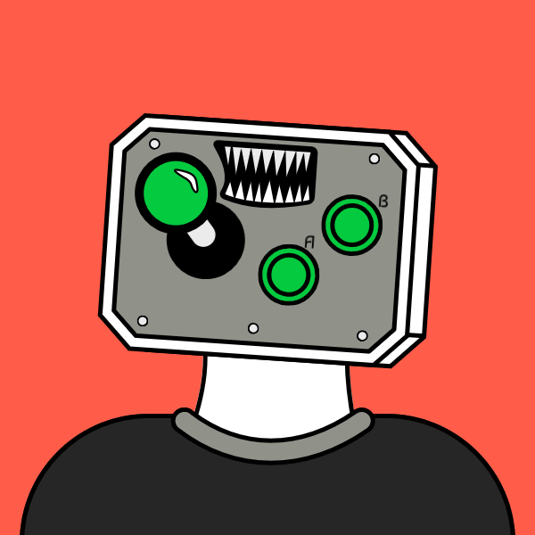
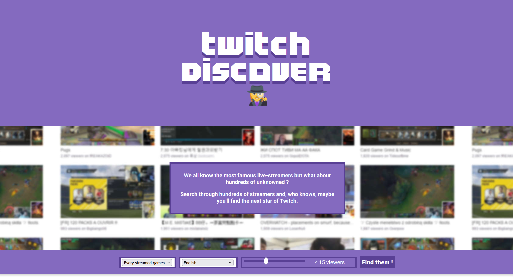
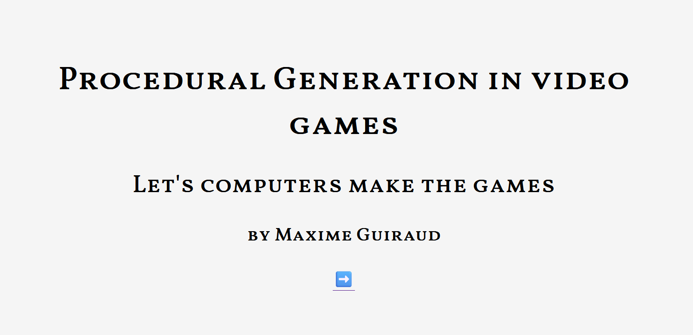
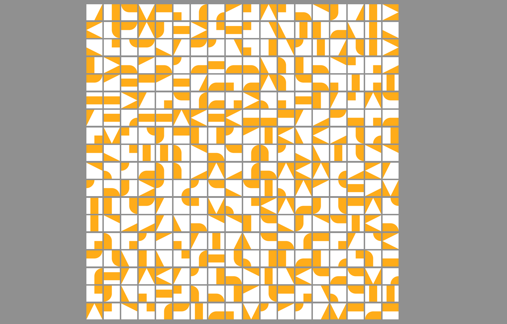

overlay twitch
creation de divers overlay pour habiller des streams twitch


/attente.png)
/portrait.png)
/4_3 2.png)
/fullscreen.png)
avatar
avatar à travers le temps

twitch discover
moteur de recherche de stream par nombre de viewers. Décommisionné après les récentes mises à jour de l'api twitch

Let's computer make games
Présentation sur les différents procédés de génération procédurales utilisés dans le jeu vidéo.

Générateur de pattern de carrelage
Petit générateur fait en 10min pour s'aider à choisir comment poser le carrelage dans mon entrée.
(F5 pour générer un nouveau pattern)
(F5 pour générer un nouveau pattern)
